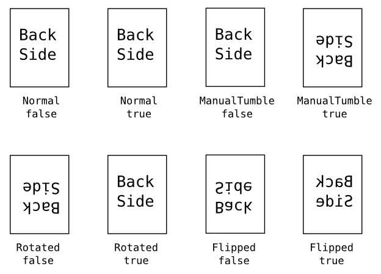

This specification describes the attributes and extensions that CUPS adds to Adobe TechNote #5003: PostScript Printer Description File Format Specification Version 4.3. PostScript Printer Description ("PPD") files describe the capabilities of each printer and are used by CUPS to support printer-specific features and intelligent filtering.
The PPD format is text-based and uses lines of up to 255 characters terminated by a carriage return, linefeed, or combination of carriage return and line feed. The following ABNF definition [RFC2234] defines the general format of lines in a PPD file:
PPD-FILE = HEADER +(DATA / COMMENT / LINE-END)
HEADER = "*" 0x50.50.44.2D.41.64.6F.62.65 ":" ; *PPD-Adobe:
*WSP DQUOTE "4.3" DQUOTE LINE-END
COMMENT = "*%" *TCHAR LINE-END
DATA = "*" 1*KCHAR [ WSP 1*KCHAR [ "/" 1*TCHAR ] ] ":"
1*(*WSP VALUE) LINE-END
VALUE = 1*TCHAR / DQUOTE 1*SCHAR DQUOTE
KCHAR = ALPHA / DIGIT / "_" / "." / "-"
SCHAR = LINE-END / WSP / %x21 / %x23-7E / %xA0-FF
TCHAR = %x20-7E / %xA0-FF
LINE-END = CR / LF / CR LF
CUPS supports several methods of auto-configuration via PPD attributes. Currently these methods are only implemented on Mac OS X.
*APAutoSetupTool: "/LibraryPrinters/vendor/filename"
This attribute defines a program that sets the default option choices. It is run when a printer is added from the printer browser instead of the normal PostScript query and SNMP OID attribute lookups.
The program is provided with two arguments: the printer's device URI and the PPD file to be used for the printer. The program must write an updated PPD file to stdout.
Examples:
*% Use our setup tool when adding a printer *APAutoSetupTool: "/Library/Printers/vendor/Tools/autosetuptool"
*?MainKeyword: "
PostScript query code that writes a message using the = operator...
"
*End
The ?MainKeyword attribute defines PostScript code that determines the currently selected/enabled option keyword (choice) for the main keyword (option). It is typically used when communicating with USB, serial, Appletalk, and AppSocket (port 9100) printers.
The PostScript code typically sends its response back using the = operator.
Example:
*OpenUI OptionDuplex/Duplexer Installed: Boolean
*DuplexOptionDuplex: False
*OptionDuplex False/Not Installed: ""
*OptionDuplex True/Installed: ""
*% Query the printer for the presence of the duplexer option...
*?OptionDuplex: "
currentpagedevice /Duplex known
{(True)} {(False)} ifelse
= flush
"
*End
*CloseUI: OptionDuplex
*?OIDMainKeyword: ".n.n.n..."
*OIDMainKeyword OptionKeyword1: "value"
...
*OIDMainKeyword OptionKeywordN: "value"
The OIDMainKeyword attribute is used to define SNMP OIDs that map to installable options. The first (query) line defines the OID to lookup on the network device. The second and subsequent attributes define a mapping from OID value to option keyword. Since SNMP is an IP-based network protocol, this method is typically only used to configure AppSocket, IPP, and LPD network printers.
Examples:
*% Get the installed memory on the printer... *?OIDInstalledMemory: ".1.3.6.1.2.1.25.2.2.0" *OIDInstalledMemory 16MB: "16384 KBytes" *OIDInstalledMemory 32MB: "32768 KBytes" *OIDInstalledMemory 48MB: "49152 KBytes" *OIDInstalledMemory 72MB: "73728 KBytes"
CUPS supports three types of color profiles. The first type is based on sRGB and is used by the standard CUPS raster filters and GPL Ghostscript. The second type is based on ICC profiles and is used by the Quartz-based filters on MacOS X. The final type is based on well-known colorspaces such as sRGB and Adobe RGB.
Note:At this time, none of the CUPS raster filters support ICC profiles. This will be addressed as time and resources permit.
*cupsColorProfile Resolution/MediaType: "density gamma m00 m01 m02 m10 m11 m12 m20 m21 m22"
This string attribute specifies an sRGB-based color profile consisting of gamma and density controls and a 3x3 CMY color transform matrix.
The Resolution and MediaType values may be "-" to act as a wildcard. Otherwise they must match one of the Resolution or MediaType attributes defined in the PPD file.
The density and gamma values define gamma and density adjustment function such that:
f(x) = density * x gamma
The m00 through m22 values define a 3x3 transformation matrix for the CMY color values. The density function is applied after the CMY transformation:
| m00 m01 m02 | | m10 m11 m12 | | m20 m21 m22 |
Examples:
*% Specify a profile for printing at 360dpi on all media types *cupsColorProfile 360dpi/-: "1.0 1.5 1.0 0.0 -0.2 -0.4 1.0 0.0 -0.2 0.0 1.0" *% Specify a profile for printing at 720dpi on Glossy media *cupsColorProfile 720dpi/Glossy: "1.0 2.5 1.0 0.0 -0.2 -0.4 1.0 0.0 -0.2 0.0 1.0" *% Specify a default profile for printing at all other resolutions and media types *cupsColorProfile -/-: "0.9 2.0 1.0 0.0 -0.2 -0.4 1.0 0.0 -0.2 0.0 1.0"
*cupsICCProfile ColorModel.MediaType.Resolution/Description: "filename"
This attribute specifies an ICC color profile that is used to convert the document colors to the device colorspace. The ColorModel, MediaType, and Resolution keywords specify a selector for color profiles. If omitted, the color profile will match any option keyword for the corresponding main keyword.
The Description specifies human-readable text that is associated with the color profile. The filename portion specifies the ICC color profile to use; if the filename is not absolute, it is loaded relative to the /usr/share/cups/profiles directory.
Examples:
*% Specify a profile for CMYK printing at 360dpi on all media types *cupsICCProfile CMYK..360dpi/360dpi CMYK: "/Library/Printers/vendor/Profiles/foo-360-cmyk.icc" *% Specify a profile for RGB printing at 720dpi on Glossy media *cupsColorProfile RGB.Glossy.720dpi/720dpi Glossy: "/Library/Printers/vendor/Profiles/foo-720-glossy-rgb.icc" *% Specify a default profile for printing at all other resolutions and media types *cupsICCProfile ../Default: "/Library/Printers/vendor/Profiles/foo-default.icc"
The MediaType and Resolution keywords can be reassigned to different main keywords, allowing drivers to do color profile selection based on different parameters. The cupsICCQualifier2 and cupsICCQualifier3 attributes define the mapping from selector to main keyword:
*cupsICCQualifier2: MainKeyword2 *cupsICCQualifier3: MainKeyword3
The default mapping is as follows:
*cupsICCQualifier2: MediaType *cupsICCQualifier3: Resolution
*APSupportsCustomColorMatching: true
*APCustomColorMatchingName name/text: ""
*APCustomColorMatchingProfile: profile
*APDefaultCustomColorMatchingProfile: profile
These attributes tell the Mac OS X raster filters that the printer driver provides its own custom color matching and that generic color profiles should be used when generating 1-, 3-, and 4-component raster data as requested by the driver. The APCustomColorMatchingProfile and APDefaultColorMatchingProfile attributes specify alternate color profiles (sRGB or AdobeRGB) to use for 3-color (RGB) raster data.
*APCustomColorMatchingName name/text: ""
This attribute defines an alternate name for the color matching provided by a driver in the Color Matching print panel. The default is to use the name "Vendor Matching" or its localized equivalent.
Examples:
*% Define the names for our color matching... *APCustomColorMatchingName name/AcmeColor(tm): "" *fr.APCustomColorMatchingName name/La AcmeColor(tm): ""
*APCustomColorMatchingProfile: name
This attribute defines a supported RGB color profile that can be used when doing custom color matching. Currently only sRGB and AdobeRGB are supported. If not specified, RGB data will use the Generic RGB colorspace.
Note:If you provide multiple APCustomColorMatchingProfile attributes, you are responsible for providing the necessary user interface controls to select the profile in a print dialog pane. Add the named profile to the print settings using the key kPMCustomColorMatchingProfileKey.
Examples:
*% Use sRGB for RGB color by default, but support both sRGB and AdobeRGB *APSupportsCustomColorMatching: true *APDefaultCustomColorMatchingProfile: sRGB *APCustomColorMatchingProfile: sRGB *APCustomColorMatchingProfile: AdobeRGB
*APDefaultCustomColorMatchingProfile: name
This attribute defines the default RGB color profile that will be used when doing custom color matching. Currently only sRGB and AdobeRGB are supported.
Examples:
*% Use sRGB for RGB color by default *APSupportsCustomColorMatching: true *APDefaultCustomColorMatchingProfile: sRGB
*APSupportsCustomColorMatching: boolean
This attribute specifies that the driver provides its own custom color matching. When true, the default hand-off colorspace will be Generic Gray, Generic RGB, or Generic CMYK depending on the number of components the driver requests. The APDefaultCustomColorMatchingProfile attribute can be used to override the default 3-component (RGB) colorspace.
The default for APSupportsCustomColorMatching is false.
Examples:
*APSupportsCustomColorMatching: true *APDefaultCustomColorMatchingProfile: sRGB
CUPS 1.2 and higher adds support for PPD files containing multiple languages by following the following additional rules:
*ll.Translation MainKeyword/translation
text: ""
*ll_CC.Translation MainKeyword/translation
text: ""
*ll.MainKeyword OptionKeyword/translation
text: ""
*ll_CC.MainKeyword OptionKeyword/translation
text: ""
Note:We use a LanguageEncoding value of ISOLatin1 and limit the allowed base translation strings to ASCII to avoid character coding issues that would otherwise occur. In addition, requiring the base translation strings to be in English allows for easier fallback translation when no localization is provided in the PPD file for a given locale.
Examples:
*LanguageVersion: English *LanguageEncoding: ISOLatin1 *cupsLanguages: "de fr_CA" *ModelName: "Foobar Laser 9999" *% Localize ModelName for French and German *fr_CA.Translation ModelName/La Foobar Laser 9999: "" *de.Translation ModelName/Foobar LaserDrucken 9999: "" *cupsIPPReason com.vendor-error/A serious error occurred: "/help/com.vendor/error.html" *% Localize printer-state-reason for French and German *fr_CA.cupsIPPReason com.vendor-error/Une erreur sèrieuse s'est produite: "/help/com.vendor/error.html" *de.cupsIPPReason com.vendor-error/Eine ernste Störung trat: "/help/com.vendor/error.html" ... *OpenUI *InputSlot/Paper Source: PickOne *OrderDependency: 10 AnySetup *InputSlot *DefaultInputSlot: Auto *% Localize InputSlot for French and German *fr_CA.Translation InputSlot/Papier source: "" *de.Translation InputSlot/Papiereinzug: "" *InputSlot Auto/Default: "<</ManualFeed false>>setpagedevice" *% Localize InputSlot=Auto for French and German *fr_CA.InputSlot Auto/Par Defaut: "" *de.InputSlot Auto/Standard: "" *InputSlot Manual/Manual Feed: "<</ManualFeed true>>setpagedevice" *% Localize InputSlot=Manual for French and German *fr_CA.InputSlot Manual/Manuel mecanisme de alimentation: "" *de.InputSlot Manual/Manueller Einzug: "" *CloseUI: *InputSlot
CUPS supports custom options using an extension of the CustomPageSize and ParamCustomPageSize syntax:
*CustomFoo True: "command" *ParamCustomFoo Name1/Text 1: order type minimum maximum *ParamCustomFoo Name2/Text 2: order type minimum maximum ... *ParamCustomFoo NameN/Text N: order type minimum maximum
When the base option is part of the JCLSetup section, the "command" string contains JCL commands with "\order" placeholders for each numbered parameter. The CUPS API handles any necessary value quoting for HP-PJL commands. For example, if the JCL command string is "@PJL SET PASSCODE=\1" and the first option value is "1234" then CUPS will output the string "@PJL SET PASSCODE=1234".
For non-JCLSetup options, the "order" value is a number from 1 to N and specifies the order of values as they are placed on the stack before the command. For example, if the PostScript command string is "<</cupsReal1 2 1 roll>>setpagedevice" and the option value is "2.0" then CUPS will output the string "2.0 <</cupsReal1 2 1 roll>>setpagedevice".
The "type" is one of the following keywords:
Note:Custom options are not directly supported by the Mac OS X Print Dialog nor by the CUPS web interface at this time. Vendors that use custom options on Mac OS X must provide their own user interface via the APDialogExtension attribute.
Examples:
*% Base JCL key code option *JCLOpenUI JCLPasscode/Key Code: PickOne *OrderDependency: 10 JCLSetup *JCLPasscode *DefaultJCLPasscode: None *JCLPasscode None/No Code: "" *JCLPasscode 1111: "@PJL SET PASSCODE = 1111<0A>" *JCLPasscode 2222: "@PJL SET PASSCODE = 2222<0A>" *JCLPasscode 3333: "@PJL SET PASSCODE = 3333<0A>" *JCLCloseUI: *JCLPasscode *% Custom JCL key code option *CustomJCLPasscode True: "@PJL SET PASSCODE = \1<0A>" *ParamCustomJCLPasscode Code/Key Code: 1 passcode 4 4 *% Base PostScript watermark option *OpenUI WatermarkText/Watermark Text: PickOne *OrderDependency: 10 AnySetup *WatermarkText *DefaultWatermarkText: None *WatermarkText None: "" *WatermarkText Draft: "<</cupsString1(Draft)>>setpagedevice" *CloseUI: *WatermarkText *% Custom PostScript watermark option *CustomWatermarkText True: "<</cupsString1 3 -1 roll>>setpagedevice" *ParamCustomWatermarkText Text: 1 string 0 32 *% Base PostScript gamma/density option *OpenUI GammaDensity/Gamma and Density: PickOne *OrderDependency: 10 AnySetup *GammaDensity *DefaultGammaDensity: Normal *GammaDensity Normal/Normal: "<</cupsReal1 1.0/cupsReal2 1.0>>setpagedevice" *GammaDensity Light/Lighter: "<</cupsReal1 0.9/cupsReal2 0.67>>setpagedevice" *GammaDensity Dark/Darker: "<</cupsReal1 1.1/cupsReal2 1.5>>setpagedevice" *CloseUI: *GammaDensity *% Custom PostScript gamma/density option *CustomGammaDensity True: "<</cupsReal1 3 -1 roll/cupsReal2 5 -1>>setpagedevice" *ParamCustomGammaDensity Gamma: 1 curve 0.1 10 *ParamCustomGammaDensity Density: 2 real 0 2
PPD files are used for both PostScript and non-PostScript printers. For CUPS raster drivers, you use a subset of the PostScript language to set page device attributes such as page size, resolution, and so forth. For example, the following code sets the page size to A4 size:
*PageSize A4: "<</PageSize[595 842]>>setpagedevice"
Custom options typically use other operators to organize the values into a key/value dictionary for setpagedevice. For example, our previous CustomWatermarkText option code uses the roll operator to move the custom string value into the dictionary for setpagedevice:
*CustomWatermarkText True: "<</cupsString1 3 -1 roll>>setpagedevice"
For a custom string value of "My Watermark", CUPS will produce the following PostScript code for the option:
(My Watermark) <</cupsString1 3 -1 roll>>setpagedevice
The code moves the string value ("My Watermark") from the bottom of the stack to the top, creating a dictionary that looks like:
<</cupsString1(My Watermark)>>setpagedevice
The resulting dictionary sets the page device attributes that are sent to your raster driver in the page header.
There are many possible implementations of the CustomPageSize code. For CUPS raster drivers, the following code is recommended:
*ParamCustomPageSize Width: 1 points min-width max-width *ParamCustomPageSize Height: 2 points min-height max-height *ParamCustomPageSize WidthOffset: 3 points 0 0 *ParamCustomPageSize HeightOffset: 4 points 0 0 *ParamCustomPageSize Orientation: 5 int 0 0 *CustomPageSize True: "pop pop pop <</PageSize[5 -2 roll]/ImagingBBox null>>setpagedevice"
CUPS supports the following PostScript operators in addition to the usual PostScript number, string (literal and hex-encoded), boolean, null, and name values:
Note:Never use the unsupported dict or put operators in your option code. These operators are typically used in option code dating back to Level 1 PostScript printers, which did not support the simpler << or >> operators. If you have old option code using dict or put, you can rewrite it very easily to use the newer << and >> operators instead. For example, the following code to set the page size:
1 dict dup /PageSize [612 792] put setpagedevicecan be rewritten as:
<< /PageSize [612 792] >> setpagedevice
Table 2 shows the supported page device attributes along with PostScript code examples.
| Name(s) | Type | Description | Example(s) |
|---|---|---|---|
| AdvanceDistance | Integer | Specifies the number of points to advance roll media after printing. | <</AdvanceDistance 18>>setpagedevice |
| AdvanceMedia | Integer | Specifies when to advance the media: 0 = never, 1 = after the file, 2 = after the job, 3 = after the set, and 4 = after the page. | <</AdvanceMedia 4>>setpagedevice |
| Collate | Boolean | Specifies whether collated copies are required. | <</Collate true>>setpagedevice |
| CutMedia | Integer | Specifies when to cut the media: 0 = never, 1 = after the file, 2 = after the job, 3 = after the set, and 4 = after the page. | <</CutMedia 1>>setpagedevice |
| Duplex | Boolean | Specifies whether 2-sided printing is required. | <</Duplex true>>setpagedevice |
| HWResolution | Integer Array | Specifies the resolution of the page image in pixels per inch. | <</HWResolution[1200 1200]>>setpagedevice |
| InsertSheet | Boolean | Specifies whether to insert a blank sheet before the job. | <</InsertSheet true>>setpagedevice |
| Jog | Integer | Specifies when to shift the media in the output bin: 0 = never, 1 = after the file, 2 = after the job, 3 = after the set, and 4 = after the page. | <</Jog 2>>setpagedevice |
| LeadingEdge | Integer | Specifies the leading edge of the media: 0 = top, 1 = right, 2 = bottom, 3 = left. | <</LeadingEdge 0>>setpagedevice |
| ManualFeed | Boolean | Specifies whether media should be drawn from the manual feed tray. Note: The MediaPosition attribute is preferred over the ManualFeed attribute. | <</ManualFeed true>>setpagedevice |
| MediaClass | String | Specifies a named media. | <</MediaClass (Invoices)>>setpagedevice |
| MediaColor | String | Specifies the color of the media. | <</MediaColor >>setpagedevice |
| MediaPosition | Integer | Specifies the tray or source of the media. | <</MediaPosition 12>>setpagedevice |
| MediaType | String | Specifies the general media type. | <</MediaType (Glossy)>>setpagedevice |
| MediaWeight | Integer | Specifies the media weight in grams per meter2. | <</MediaWeight 100>>setpagedevice |
| MirrorPrint | Boolean | Specifies whether to flip the output image horizontally. | <</MirrorPrint true>>setpagedevice |
| NegativePrint | Boolean | Specifies whether to invert the output image. | <</NegativePrint true>>setpagedevice |
| NumCopies | Integer | Specifies the number of copies to produce of each page. | <</NumCopies 100>>setpagedevice |
| Orientation | Integer | Specifies the orientation of the output: 0 = portrait, 1 = landscape rotated counter-clockwise, 2 = upside-down, 3 = landscape rotated clockwise. | <</Orientation 3>>setpagedevice |
| OutputFaceUp | Boolean | Specifies whether to place the media face-up in the output bin/tray. | <</OutputFaceUp true>>setpagedevice |
| OutputType | String | Specifies the output type name. | <</OutputType (Photo)>>setpagedevice |
| PageSize | Integer/Real Array | Specifies the width and length/height of the page in points. | <</PageSize[595 842]>>setpagedevice |
| Separations | Boolean | Specifies whether to produce color separations. | <</Separations true>>setpagedevice |
| TraySwitch | Boolean | Specifies whether to switch trays automatically. | <</TraySwitch true>>setpagedevice |
| Tumble | Boolean | Specifies whether the back sides of pages are rotated 180 degrees. | <</Tumble true>>setpagedevice |
| cupsBorderlessScalingFactor | Real | Specifies the amount to scale the page image dimensions. | <</cupsBorderlessScalingFactor 1.01>>setpagedevice |
| cupsColorOrder | Integer | Specifies the order of colors: 0 = chunked, 1 = banded, 2 = planar. | <</cupsColorOrder 0>>setpagedevice |
| cupsColorSpace | Integer | Specifies the page image colorspace: 0 = W, 1 = RGB, 2 = RGBA, 3 = K, 4 = CMY, 5 = YMC, 6 = CMYK, 7 = YMCK, 8 = KCMY, 9 = KCMYcm, 10 = GMCK, 11 = GMCS, 12 = White, 13 = Gold, 14 = Silver, 15 = CIE XYZ, 16 = CIE Lab, 17 = RGBW, 32 to 46 = CIE Lab (1 to 15 inks) | <</cupsColorSpace 1 >>setpagedevice |
| cupsCompression | Integer | Specifies a driver compression type/mode. | <</cupsCompression 2>>setpagedevice |
| cupsInteger0 ... cupsInteger15 |
Integer | Specifies driver integer values. | <</cupsInteger11 1234>>setpagedevice |
| cupsMarkerType | String | Specifies the type of ink/toner to use. | <</cupsMarkerType (Black+Color)>>setpagedevice |
| cupsMediaType | Integer | Specifies a numeric media type. | <</cupsMediaType 999>>setpagedevice |
| cupsPageSizeName | String | Specifies the name of the page size. | <</cupsPageSizeName (A4.Full)>>setpagedevice |
| cupsPreferredBitsPerColor | Integer | Specifies the preferred number of bits per color, typically 8 or 16. | <</cupsPreferredBitsPerColor 16>>setpagedevice |
| cupsReal0 ... cupsReal15 |
Real | Specifies driver real number values. | <</cupsReal15 1.234>>setpagedevice |
| cupsRenderingIntent | String | Specifies the color rendering intent. | <</cupsRenderingIntent (AbsoluteColorimetric)>>setpagedevice |
| cupsRowCount | Integer | Specifies the number of rows of raster data to print on each line for some drivers. | <</cupsRowCount 24>>setpagedevice |
| cupsRowFeed | Integer | Specifies the number of rows to feed between passes for some drivers. | <</cupsRowFeed 17>>setpagedevice |
| cupsRowStep | Integer | Specifies the number of lines between columns/rows on the print head for some drivers. | <</cupsRowStep 2>>setpagedevice |
| cupsString0 ... cupsString15 |
String | Specifies driver string values. | <</cupsString0(String Value)>>setpagedevice |
*cupsBackSide: keyword
This attribute requests special handling of the back side of pages
when doing duplexed (2-sided) output. Table 1
shows the supported keyword values for this attribute and their effect
on the raster data sent to your driver. For example, when cupsBackSide
is Rotated and Tumble is false, your driver
will receive print data starting at the bottom right corner of the page, with
each line going right-to-left instead of left-to-right. The default value is
Normal.
Note:cupsBackSide replaces the older cupsFlipDuplex attribute - if cupsBackSide is specified, cupsFlipDuplex will be ignored.
| cupsBackSide | Tumble Value | Image Presentation |
|---|---|---|
Normal |
false |
Left-to-right, top-to-bottom |
Normal |
true |
Left-to-right, top-to-bottom |
ManualTumble |
false |
Left-to-right, top-to-bottom |
ManualTumble |
true |
Right-to-left, bottom-to-top |
Rotated |
false |
Right-to-left, bottom-to-top |
Rotated |
true |
Right-to-left, top-to-bottom |
Flipped * |
false |
Left-to-right, bottom-to-top |
Flipped * |
true |
Right-to-left, top-to-bottom |
* - Not supported in Mac OS X 10.5.x and earlier
|  |
Examples:
*% Flip the page image for the back side of duplexed output *cupsBackSide: Flipped *% Rotate the page image for the back side of duplexed output *cupsBackSide: Rotated
Also see the related APDuplexRequiresFlippedMargin attribute.
*cupsEvenDuplex: boolean
This boolean attribute notifies the RIP filters that the
destination printer requires an even number of pages when 2-sided
printing is selected. The default value is false.
Example:
*% Always send an even number of pages when duplexing *cupsEvenDuplex: true
*cupsFax: boolean
This boolean attribute specifies whether the PPD defines a facsimile device. The default is false.
Examples:
*cupsFax: true
*cupsFilter: "source/type cost program"
This string attribute provides a conversion rule from the given source type to the printer's native format using the filter "program". If a printer supports the source type directly, the special filter program "-" may be specified.
Examples:
*% Standard raster printer driver filter *cupsFilter: "application/vnd.cups-raster 100 rastertofoo" *% Plain text filter *cupsFilter: "text/plain 10 texttofoo" *% Pass-through filter for PostScript printers *cupsFilter: "application/vnd.cups-postscript 0 -"
*cupsFlipDuplex: boolean
Due to implementation differences between Mac OS X and Ghostscript, the cupsFlipDuplex attribute is deprecated. Instead, use the cupsBackSide attribute to specify the coordinate system (pixel layout) of the page data on the back side of duplex pages.
The value true maps to a cupsBackSide value
of Rotated on Mac OS X and Flipped with
Ghostscript.
The default value is false.
Note:Mac OS X drivers that previously used cupsFlipDuplex may wish to provide both the old and new attributes for maximum compatibility, for example:
*cupsBackSide: Rotated *cupsFlipDuplex: trueSimilarly, drivers written for other operating systems using Ghostscript can use:
*cupsBackSide: Flipped *cupsFlipDuplex: true
*cupsIPPFinishings number/text: "*Option Choice ..."
This attribute defines a mapping from IPP finishings
values to PPD options and choices.
Examples:
*cupsIPPFinishings 4/staple: "*StapleLocation SinglePortrait" *cupsIPPFinishings 5/punch: "*PunchMedia Yes *PunchLocation LeftSide" *cupsIPPFinishings 20/staple-top-left: "*StapleLocation SinglePortrait" *cupsIPPFinishings 21/staple-bottom-left: "*StapleLocation SingleLandscape"
*cupsIPPReason reason/Reason Text: "optional URIs"
This optional attribute maps custom
printer-state-reasons keywords that are generated by
the driver to human readable text. The optional URIs string
contains zero or more URIs separated by a newline. Each URI can
be a CUPS server absolute path to a help file under the
scheduler's DocumentRoot directory, a full HTTP URL
("http://www.domain.com/path/to/help/page.html"), or any other
valid URI which directs the user at additional information
concerning the condition that is being reported.
Since the reason text is limited to 80 characters by the PPD specification,
longer text strings can be included by URI-encoding the text with the "text"
scheme, for example "text:some%20text". Multiple text URIs are
combined (with spaces between each URI) by the ppdLocalizeIPPReason
into a single string that can be displayed to the user.
Examples:
*% Map com.vendor-error to text but no page *cupsIPPReason com.vendor-error/A serious error occurred: "" *% Map com.vendor-error to more than 80 characters of text but no page *cupsIPPReason com.vendor-error/A serious error occurred: "text:Now%20is%20the%20time text:for%20all%20good%20men%20to%20come%20to%20the%20aid%20of%20their%20country." *% Map com.vendor-error to text and a local page *cupsIPPReason com.vendor-error/A serious error occurred: "/help/com.vendor/error.html" *% Map com.vendor-error to text and a remote page *cupsIPPReason com.vendor-error/A serious error occurred: "http://www.vendor.com/help" *% Map com.vendor-error to text and a local, Apple help book, and remote page *APHelpBook: "file:///Library/Printers/vendor/Help.bundle" *cupsIPPReason com.vendor-error/A serious error occurred: "/help/com.vendor/error.html help:anchor='com.vendor-error'%20bookID=Vendor%20Help http://www.vendor.com/help" *End
*cupsMarkerName/Name Text: ""
This optional attribute maps marker-names strings that are
generated by the driver to human readable text.
Examples:
*% Map cyanToner to "Cyan Toner" *cupsMarkerName cyanToner/Cyan Toner: ""
*cupsLanguages: "locale list"
This attribute describes which language localizations are included in the PPD. The "locale list" string is a space-delimited list of locale names ("en", "en_US", "fr_CA", etc.)
Example:
*% Specify Canadian, UK, and US English, and Candian and French French *cupsLanguages: "en_CA en_UK en_US fr_CA fr_FR"
*cupsManualCopies: boolean
This boolean attribute notifies the RIP filters that the
destination printer does not support copy generation in
hardware. The default value is false.
Example:
*% Tell the RIP filters to generate the copies for us *cupsManualCopies: true
*cupsModelNumber: number
This integer attribute specifies a printer-specific model number. This number can be used by a filter program to adjust the output for a specific model of printer.
Example:
*% Specify an integer for a driver-specific model number *cupsModelNumber: 1234
*cupsPJLCharset: "ISO character set name"
This string attribute specifies the character set that is used for strings in PJL commands. If not specified, US-ASCII is assumed.
Example:
*% Specify UTF-8 is used in PJL strings *cupsPJLCharset: "UTF-8"
*cupsPortMonitor urischeme/Descriptive Text: "port monitor"
This string attribute specifies printer-specific "port monitor" filters that may be used with the printer. The CUPS scheduler also looks for the Protocols attribute to see if the BCP or TBCP protocols are supported. If so, the corresponding port monitor ("bcp" and "tbcp", respectively) is listed in the printer's port-monitor-supported attribute.
The "urischeme" portion of the attribute specifies the URI scheme that this port monitor should be used for. Typically this is used to pre-select a particular port monitor for each type of connection that is supported by the printer. The "port monitor" string can be "none" to disable the port monitor for the given URI scheme.
Examples:
*% Specify a PostScript printer that supports the TBCP protocol *Protocols: TBCP PJL *% Specify that TBCP should be used for socket connections but not USB *cupsPortMonitor socket/AppSocket Printing: "tbcp" *cupsPortMonitor usb/USB Printing: "none" *% Specify a printer-specific port monitor for an Epson USB printer *cupsPortMonitor usb/USB Status Monitor: "epson-usb"
*cupsPreFilter: "source/type cost program"
This string attribute provides a pre-filter rule. The pre-filter program will be inserted in the conversion chain immediately before the filter that accepts the given MIME type.
Examples:
*% PDF pre-filter *cupsPreFilter: "application/pdf 100 mypdfprefilter" *% PNG pre-filter *cupsPreFilter: "image/png 0 mypngprefilter"
*cupsVersion: major.minor
This required attribute describes which version of the CUPS PPD file extensions was used. Currently it must be the string "1.0", "1.1", "1.2", or "1.3".
Example:
*% Specify a CUPS 1.2 driver *cupsVersion: "1.2"
*APDialogExtension: "/Library/Printers/vendor/filename.plugin"
This attribute defines additional option panes that are displayed in the print dialog. Each attribute adds one or more option panes. See the "OutputBinsPDE" example and Apple Technical Q&A QA1352 for information on writing your own print dialog plug-ins.
Note:Starting with Mac OS X 10.5, each plug-in must be compiled "4-way fat" (32-bit and 64-bit for both PowerPC and Intel) with garbage collection enabled in order to be usable with all applications.
Examples:
*% Add two panes for finishing and driver options *APDialogExtension: "/Library/Printers/vendor/finishing.plugin" *APDialogExtension: "/Library/Printers/vendor/options.plugin"
*APDuplexRequiresFlippedMargin: boolean
This boolean attribute notifies the RIP filters that the destination printer requires the top and bottom margins of the ImageableArea to be swapped for the back page. The default is true when cupsBackSide is Flipped and false otherwise. Table 2 shows how APDuplexRequiresFlippedMargin interacts with cupsBackSide and the Tumble page attribute.
| APDuplexRequiresFlippedMargin | cupsBackSide | Tumble Value | Margins |
|---|---|---|---|
| false | any | any | Normal |
| any | Normal | any | Normal |
| true | ManualDuplex | false | Normal |
| true | ManualDuplex | true | Flipped |
| true | Rotated | false | Flipped |
| true | Rotated | true | Normal |
| true or unspecified | Flipped | any | Flipped |
Example:
*% Rotate the back side images *cupsBackSide: Rotated *% Don't swap the top and bottom margins for the back side *APDuplexRequiresFlippedMargin: false
Also see the related cupsBackSide attribute.
*APHelpBook: "bundle URL"
This string attribute specifies the Apple help book bundle to use when looking up IPP reason codes for this printer driver. The cupsIPPReason attribute maps "help" URIs to this file.
Example:
*APHelpBook: "file:///Library/Printers/vendor/Help.bundle"
*APPrinterIconPath: "/Library/Printers/vendor/filename"
This attribute defines the location of a printer icon file to use when displaying the printer.
Examples:
*% Apple icon file *APPrinterIconPath: "/Library/Printers/vendor/Icons/filename.icns" *% TIFF icon file *APPrinterIconPath: "/Library/Printers/vendor/Icons/filename.tiff" *% PNG icon file *APPrinterIconPath: "/Library/Printers/vendor/Icons/filename.png" *% JPEG icon file *APPrinterIconPath: "/Library/Printers/vendor/Icons/filename.jpg"
*APPrinterLowInkTool: "/Library/Printers/vendor/program"
This attribute defines an program that checks the ink/toner/marker levels on a printer, returning an XML document with those levels. See the "InkTool" example and Apple Technical Note TN2144 for more information.
Examples:
*% Use a vendor monitoring program *APPrinterLowInkTool: "/Library/Printers/vendor/Tools/lowinktool"
*APPrinterPreset name/text: "*Option Choice ..."
This attribute defines presets for multiple options that show up in the print dialog of applications (such as iPhoto) that set the job style hint to NSPrintPhotoJobStyleHint. Each preset maps to one or more pairs of PPD options and choices as well as providing key/value data for the application. The following preset names are currently defined:
Photo_with_Paper_Auto-Detect; Photo printing
with paper auto-detectPhoto_with_Paper_Auto-Detect_-_Fine; Photo printing
with paper auto-detect - finePhoto_on_Plain_Paper; Photo printing on plain paperPhoto_on_Plain_Paper_-_Fine; Photo printing on plain
paper - finePhoto_on_Photo_Paper; Photo printing on photo paperPhoto_on_Photo_Paper_-_Fine; Photo printing on photo
paper - finePhoto_on_Matte_Paper; Photo printing on matte paperPhoto_on_Matte_Paper_-_Fine; Photo printing on matte
paper - fineThe value string consists of pairs of keywords, either an option name and choice (*MainKeyword OptionKeyword) or a preset identifier and value (com.apple.print.preset.foo value). Preset identifiers and their supported values are documented in "Creating Printing Presets for iPhoto: Printing Presets File Format".
Presets, like options, can also be localized in multiple languages.
Examples:
*APPrinterPreset Photo_on_Photo_Paper/Photo on Photo Paper: " *MediaType Glossy *ColorModel RGB *Resolution 300dpi com.apple.print.preset.graphicsType Photo com.apple.print.preset.quality mid com.apple.print.preset.media-front-coating glossy" *End *fr.APPrinterPreset Photo_on_Photo_Paper/Photo sur papier photographique: ""
*APPrinterPrinterUtilityPath: "/Library/Printers/vendor/filename.app"
This attribute defines a GUI application that can be used to do printer maintenance functions such as cleaning the print head(s). See ... for more information.
Examples:
*% Define the printer utility application *APPrinterPrinterUtilityPath: "/Library/Printers/vendor/Tools/utility.app"
*APScanAppBundleID: "bundle ID"
This attribute defines the application to use when scanning pages from the device.
Examples:
*APScanAppBundleID: "com.apple.ImageCaptureApp"